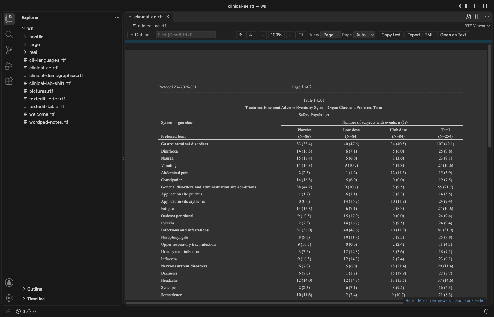

Open files in VS Code and Cursor / Docs and diagrams
Read an RTF file in VS Code
VS Code opens an .rtf file as its source, full of control words such as \par and \cell. Install the free RTF Viewer and click the file again. It opens as a read-only page with fonts, colors, tables, pictures, headers and footers, plus search, an outline, zoom and dark mode. No Word or LibreOffice is needed, and nothing leaves your computer.
Free, MIT license. Extension ID zovo.zovo-rtf-viewer, version 0.1.0. Needs VS Code 1.90.0 or newer.

Steps in VS Code
- Install RTF Viewer from the Marketplace, or press Ctrl+P (Cmd+P on macOS) and run
ext install zovo.zovo-rtf-viewer. - Click any
.rtffile in the Explorer. It opens in RTF Viewer. - Press Ctrl+F (Cmd+F on macOS) to search. Enter and Shift+Enter move between matches.
- Click Outline to jump to a heading. Switch between Page view (the paper width of the document) and Flow view (the editor width).
- Pick Auto, Light, Dark or Invert page colors. Click "Open as Text" to see the RTF source.
Steps in Cursor, Windsurf or VSCodium
- Open the Extensions view with Ctrl+Shift+X (Cmd+Shift+X on macOS).
- Search for
zovo.zovo-rtf-viewerand click Install. Cursor, Windsurf and VSCodium install from Open VSX, where it is published aszovo/zovo-rtf-viewer. - If your editor has no gallery, download the .vsix from the Open VSX page and run "Extensions: Install from VSIX...".
- Then use it the same way as in VS Code.
What RTF Viewer handles
- Tables with merged cells across and down, borders, shading, header rows and wide pages. Clinical tables (TFLs) from R and SAS open with their spanning headers.
- Files from Word, WordPad, TextEdit and LibreOffice, with code pages, Unicode, and Japanese, Chinese, Korean, Cyrillic and Greek text.
- PNG, JPEG, EMF, WMF and BMP pictures. Other picture types show as a labelled box.
- Live reload when R, SAS or another tool writes the file again, keeping your place.
- Copy all text, or export one HTML file with the pictures inside.
- In the README test, a 52 MB RTF with 100 pictures showed its first page in about a second.
What it does not do
- It's a viewer. It doesn't edit or save RTF.
- Floating text boxes and drawing shapes show only through the fallback that Word stores with them. Nested tables show in a simple form.
- Mac PICT and OS/2 pictures show as a box. For TextEdit
.rtfdpackages, open theTXT.rtfinside. - Files over 200 MB ask before they open. Embedded objects (OLE packages) are never opened.
In JetBrains IDEs (IntelliJ IDEA, PyCharm, WebStorm, CLion and others)
- No Zovo plugin for JetBrains IDEs yet. RTF Viewer is for VS Code and the editors built on it. On 9 November 2026 we found no JetBrains plugin whose listing says it previews .rtf files. The link opens the JetBrains Marketplace search for RTF.
- Document Viewer (JetBrains). 36,631 downloads. Its listing says it views Word, Excel, PDF, Markdown, CSV and TSV files inside JetBrains IDEs. RTF is not in that list.
Other options
- RTF (
alefragnani.rtf, 167,335 installs, on Open VSX). Its own description: "RTF support for Visual Studio Code". It works on the RTF source in the text editor. Pick it if you write or fix RTF by hand. - Document Viewer (
SyncfusionInc.Document-Viewer-VSCode-Extensions, 71,092 installs, not on Open VSX). Its own description: "View PDF, Word, Excel, and Markdown files directly in VS Code without external applications." - RTF Preview (
elong0527.vs-rtf-preview, 1,667 installs, on Open VSX). Its own description: "Preview RTF files by converting them to PDF using LibreOffice". It needs LibreOffice installed. - WordPad, TextEdit or LibreOffice Writer. Use one of these when you need to edit the document.
Install counts and Open VSX status were checked on 9 November 2026. Descriptions in quotes are the extensions' own.
Questions
Can I edit an RTF file with this?
No. RTF Viewer is read-only. Edit the text in Word, LibreOffice Writer or TextEdit, or edit the RTF source as text in VS Code.
Will my R or SAS tables look like they do in Word?
Merged cells, borders, shading, spanning headers and repeated page headers are drawn, and the view reloads when your program writes the file again. Floating text boxes and drawing shapes are the main gap.
Does it send the file anywhere?
No. The viewer page blocks every network request, and the extension makes none. It has no telemetry.
More about RTF Viewer
Read the RTF Viewer page for every feature and setting, or the source code on GitHub.
Related guides
- Preview a reStructuredText (.rst) file in VS Code
- Preview Mermaid diagrams in VS Code
- Preview an SVG file in VS Code
- Open a .docx Word file in VS Code
Support this work
If this extension saves you time, you can support the work on GitHub Sponsors. Monthly tiers start at $5, and one-time tiers start at $15. Sponsorship is optional, and the tool works the same without it.